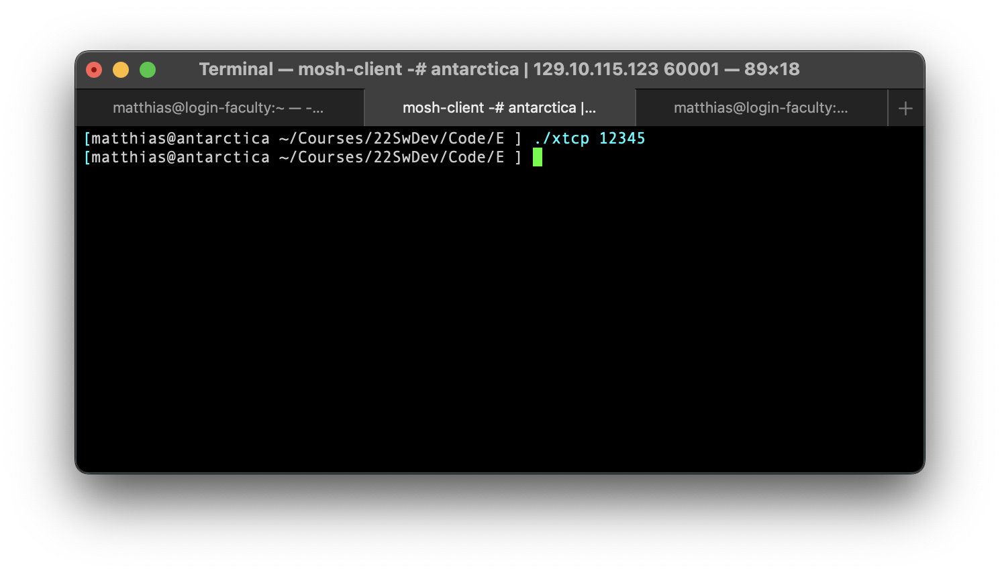
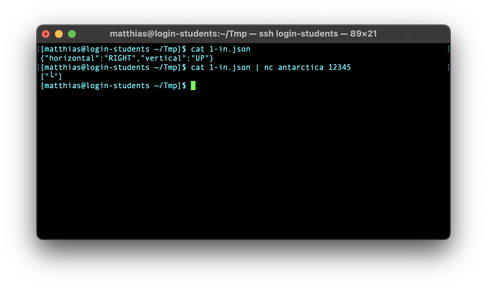

E —
Due Wednesday, 28 September 2022, 11:59pm
Purpose to explore the TCP libraries of the chosen programming language; to deliver software as specified; to respond to questions about your software; to reflect on your partnership; and optionally, to reflect on the language of your choice
Delivery You must deliver xtcp and Tests/ in a directory called E in your repository.
All auxiliary files must be put into a sub-directory called E/Other/.
Self-Evals Starting with this homework assignment, we will push a
self-evaluation form into your homework repo (E) right after the due
date/time. The form comes with instructions and a small number of questions
about your code base. You must edit the file—
Not submitting a self-evaluation by this deadline will lower your score substantially.
Task Develop xtcp, a TCP server program. It permits a single client to connect. It then consumes a series of JSON values from the input side of this TCP connection until the connection is closed. The stream can be arbitrarily long and there can be arbitrary delays between the arrival of the separate JSON values. Once the client-in connection is closed, xtcp delivers a JSON value to the output side of a TCP connection and shuts down.
The program takes one command-line argument, an integer between 10000 and ... 60000 (inclusive). This argument specifies the port on which xtcp accepts connections.
The program’s functionality is the same as that of xjson from
C —
Tests Create three tests for xtcp in the directory Tests/. You
may re-use the validated tests from your solution for C —
Constraint No test file may exceed the size limit of 20Kb.
Remote Connection
[login-students] $ cat 1-in.json | nc login-students.ccs.neu.edu 45678 |


Note how the two command lines specify the same port. Since many of your friends may try this at the same time, pick a random port number between 10000 and 60000 so you don’t interfere with each other. If all of you use 12345 on the same computer, bad things will happen.
Launching a program takes time. Switching between these two terminal windows takes time. Launch xtcp first. Then switch and launch the nc command.
Netcat vs netcap
There exists a whole family of netcat programs.
The one on the Linux servers is nmap netcat and it satisifies all of our needs.
Macs may vary; mine had the nmap netcat preinstalled via some developer toolkit.
On Windows it is likely not pre-installed. Windows users may wish to visit the nmap site, download the ncat executable, and add it to their path.
If your machine has the OpenBSD version installed, you may need to use the -N command-line option.
Partnership Evals
Subject: Sw Dev partnership evaluation |
|
My name: Foo Bar |
My partner's name: Fumble Mumble |
Our TAHPL: Python 4.312 |
|
Our partnership is ... |
The head TA and, if necessary, the instructors will read your responses; nobody else will.
After E we expect to dissolve some partnerships, some with lots of friction, some with very little friction or even none. If yours is one of them, you will get a partner in the same language family.
The partnership evaluation is worth 10 points.
Language Switch
Now that you have completed all exploratory programming tasks, you should reflect on your experience with your language and its tools. Here are some sample questions you may ponder, especially with respect to the (rather short and compact) solution that the instructors showed you in class. How much time did it take to accomplish various tasks? What problems did you encounter with the libraries for your chosen language? How easy was it to write unit tests? How well did the unit-testing tools work? Did the chosen IDE support the programming well?
Once you have answered these questions for yourself, honestly ask yourself whether you still think the language is a good choice for a project that involves the explored aspects (and more).
If you wish to switch languages, write down a rationale, using the above questions as a guide. Half a page per topic suffices. Less is more. Send it to your instructor and immediately make a 1-1 appointment.